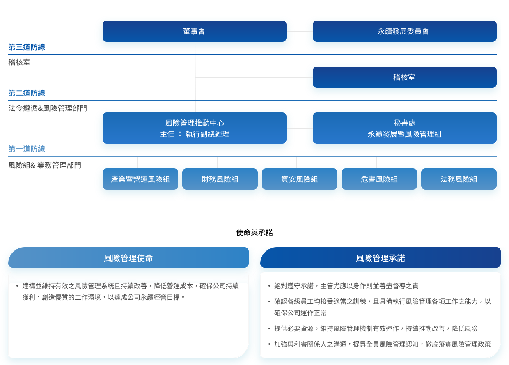
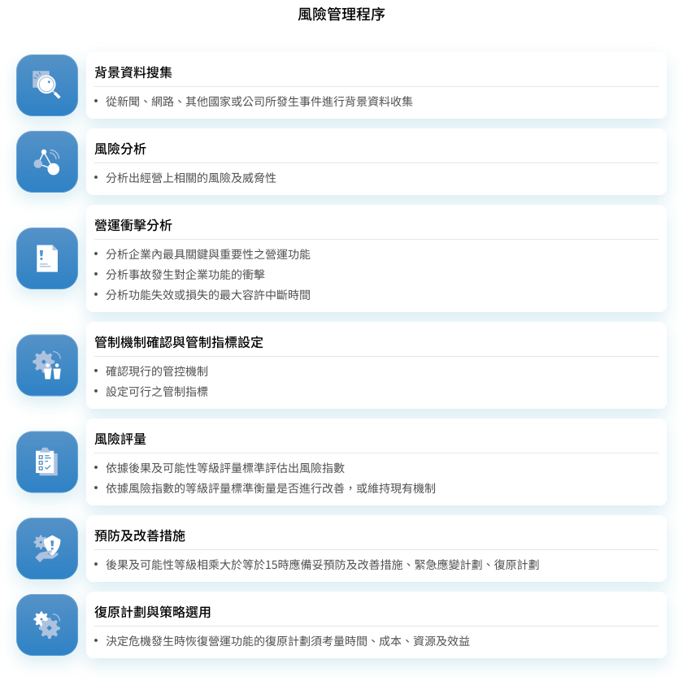
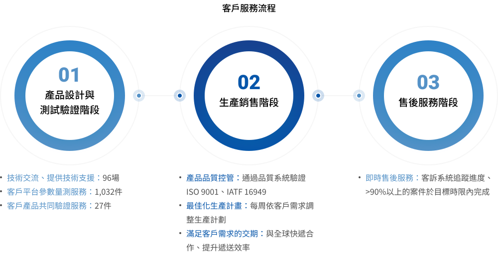
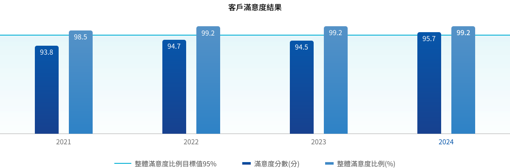

TRANSPARENCY
誠信透明 信守承諾的企業
南亞科技為恪遵法令及謹守道德規範之企業，持續強化公司治理與風險控管機制，並透過完整的教育訓練與宣導，以深化全體員工的從業道德，實踐產業共好，成為最值得信賴的公司。
- 2025年共完成量測服務1,142件及共同驗證服務28件 優質的客戶服務
- 改善供應鏈資訊安全管理，完成評鑑 150 家
- 第12屆公司治理評鑑之上市公司排名 TOP 6~20 %
重大議題策略與績效
公司治理
南亞科技相信，透過健全、有效率的公司治理機制，得以強化公司營運，確保股東權益。本公司於2026年公布的第12屆上市公司治理評鑑排名6%~20%，肯定我們在公司治理上的持續努力。

風險管理為強化董事會職能及風險管理機制，南亞科技於董事會轄下設置永續發展委員會，督導落實風險管理運作、環境保護、社會責任、公司治理等各項作為，協助公司達成永續經營之目標，透過「永續發展委員會組織規程」規範該委員會人數不少於3人，且半數以上成員應為獨立董事，目前該委員會由獨立董事4人及執行董事3人組成，7人均具備各領域危機處理及風險管理專業能力。
本公司訂有「風險管理辦法」，由董事會核定通過，其中之風險管理政策，乃為有效辨識、分析評量、控制處理、持續監測各項風險，提升全體員工之風險意識，期將風險控制於可承受之程度內，確保風險管理之完整性、有效性及效益最佳化。

風險管理制度
南亞科技之風險管理制度係為辨認及分析公司所面臨之風險，與設定適當風險胃納及控制程序，並監督各項風險及風險胃納之遵循。本公司風險管理程序所規範之風險治理架構、組織機能、風險鑑別、減緩措施、壓力測試等均有參考ISO 31000之指導綱要與原則制定，品保部門每年一次針對風險管理制度是否確實依規範執行進行內部稽核。透過風險管理機制，發掘公司潛在風險與機會，有效執行風險控管以確保公司正常營運，為股東、員工、客戶、社會等創造價值，達成公司永續經營目標。

資訊安全
為維護股東與客戶之最大權益，南亞科技積極推動資訊安全管理制度與防護系統。過去七年，公司於資安領域累計投入逾新臺幣十億元，並成立資訊安全委員會，由總經理親自督導，持續精進資訊安全管理作為。公司恪守相關法規要求，並攜手全體員工與供應鏈夥伴，共同確保資訊資產之機密性、完整性與可用性，保障客戶、股東、員工及供應商之權益，善盡企業社會責任。
南亞科技2025年再度通過第三稽核單位台灣檢驗科技股份有限公司(SGS)認證ISO 27001三年一次的資訊安全驗證，及至今擴大至全廠區導入涵蓋率達100%，彰顯南亞科技對資訊安全管理制度的重視，同時也符合國際標準。
- 全廠區導入資安管理制度 ISO 27001
- 擴大至全廠區導入涵蓋率達 100 %
- 改善供應鏈資訊安全管理，完成評鑑 150 家
誠信經營
南亞科技秉持「勤勞樸實」的企業文化精神，以廉潔誠信、公平透明、自律負責之經營理念，強化法規遵循。在商業及行為道德準則中，規範不從事慈善相關活動以外之捐獻（如政治捐獻），以保持政治上的中立，並鼓勵員工履行其應盡之公民責任。2025年未發生任何與誠信經營相關違反法規事件。
- 道德行為準則
- 反托拉斯
- 反貪腐
- 個人資料保護
- 內部控制
-
反托拉斯
為使同仁能夠了解與遵守反托拉斯法，降低南亞科技之觸法風險，南亞科技制定「反托拉斯政策」，並訂有「反托拉斯與競爭法遵循守則」以及「反托拉斯與競爭法遵循作業程序」，嚴格要求員工、各級主管恪遵職守遵循各項規章法令並適時回報董事會其遵循情形，亦針對相關同仁定期舉行訓練課程並要求簽署遵循手冊，2024年無案件發生。
規章- 反托拉斯政策
- 反托拉斯與競爭法遵循守則
- 反托拉斯與競爭法遵循作業程序
-
反貪腐
南亞科技全體員工必須遵守公司規定，凡營私舞弊、挪用公款、收受賄賂、佣金者，經查證屬實，一律免職絕不寬貸，並連同其直屬督導主管亦視情節予以連帶處分。同時編製反貪腐教材針對全體同仁進行宣導，2025年完成反貪腐宣導教育訓練涵蓋率100%之目標，訓練總時數為3,739人時，期望所有員工不論在工作與生活，都能遵循道德倫理的規範，以展現「勤勞樸實」的企業文化，2025年無貪腐相關經判刑確定之案件，請參考第四章-歷年員工申訴及舉發管道申報件數之案件說明。
規章- 商業及道德行為準則
- 人事管理規則
- 檢舉辦法
-
道德行為準則
南亞科技參考負責任商業聯盟行為準則（Code of Conduct-Responsible Business Alliance, RBA），訂定「商業及道德行為準則」及「勞工道德管理政策」作為從業行為之依據，也定期進行 RBA VAP 驗證，於2024年取得銀級。2025年度持續舉辦「RBA勞工及道德行為準則教育訓練」及「商業及道德行為準則教育訓練」，受訓對象為全體員工，訓練涵蓋率為100%；亦針對所有新進人員進行「RBA勞工及道德行為準則教育訓練」數位課程。
規章- 勞工與道德政策
- 商業及道德行為準則
-
個人資料保護
為使本公司員工與廠商在個人資料保護方面有所依循，南亞科技訂有規章，明定個資保護之組織架構與職掌、規範蒐集／處理／利用個資時之規範，以確保符合個人資料保護相關法令規定。2025 年全體員工個資保護訓練受訓人數共計3,739人，完訓率100%且無任何違規事件。公司每年進行個資內部稽核，確保個資管理之落實程度。本公司「隱私權及 Cookies 政策」公告於南亞科技官方網頁，於授權之特定目的範圍內，以合理安全的方式蒐集、處理或利用個人資料，並確保客戶得確實行使個資法規賦予之相關權利。由於公司對於 個資保護的嚴謹與有效執行，2025 年並未無違反規定之情事發生，且無授權目的外之二次利用情形。Read More
規章- 隱私權政策
- 個人資料管理作業細則
-
內部控制
南亞科技依「公開發行公司建立內部控制制度處理準則」之規定，考量公司及子公司整體之營運活動，遵循所屬產業法令，建立有效之內部控制制度，並隨時檢討，以因應公司內外在環境之變遷，確保制度之設計及執行持續有效。南亞科技公司設有稽核室，直屬於董事會，聘任 3 名專任稽核人員，依規定每年參加專業訓練機構所舉辦的稽核業務相關課程，以不斷精進專業能力，透過專業獨立之內部稽核運作架構，以落實內控精神至公司各個層面。Read More
規章- 南亞科技內部控制制度
客戶服務
南亞科技致力提供最好的客戶服務，並深信適質適時的客戶服務乃維繫客戶關係重要的關鍵，而客戶關係良好將有助於建立客戶忠誠度，鞏固與客戶間之良好信賴關係。本公司之願景係成為智慧世代最佳記憶體夥伴，以服務為導向，透過與晶片商及客戶緊密的合作，強化產品的研發與製造，滿足多樣化需求，提供客戶全方位產品及系統解決方案，提供更加優質與更值得信賴的服務。

客戶隱私保護
針對客戶隱私，南亞科技訂有「個人資料管理作業細則」，做為個資蒐集/處理/利用之準則。除非取得個資當事人的同意或其他法令之特別規定，絕不會將客戶個資揭露予第三人或使用於蒐集目的以外之其他用途。
南亞科技制定「公司機密管理辦法」訂定機密等級，並指定全體員工閱讀，及於進出辦公區及廠區皆設有金屬探測門，資安管制品不得攜出入，物品攜出入皆須隨人員通過金屬探測門檢查，及公司機密資訊未經授權，不得對他人揭露，以保障客戶權益。
- 2025年違反客戶隱私事件 0 件
- 2025年客戶滿意度 95.7
- 2025年產品召回事件 0 件
客戶滿意度
南亞科技有完整的客戶滿意度處理標準程序及客戶滿意度委員會，運用PDCA (Plan, Do, Check, Action)的管理循環手法在滿意度的過程中，形成提升客戶滿意度為共同的目標。委員會由跨部門單位組成，由行銷、業務、營管、市場應用工程及品保部門之主管參與，其主要作業項目包含調查對象選定、發送問卷、問卷回收、資料分析、定期檢視客戶的意見、協調及提出適當的改善計畫，並於高階主管會議中呈報客戶滿意度結果，最後將持續改善方向回饋予客戶，整合成一個完整及有效的跨功能服務團隊，透過「服務」創造共存共榮價值的客戶關係管理，持續提升客戶滿意度。
2024年客戶滿意度整體平均分數為 95.7 分，達成目標設定之 91 分，持續維持客戶滿意度 91 分以上高水準， 2025年目標維持為 91 分以上，每年定期檢視客戶滿意度調查實績及標竿學習，訂定合理目標值，目標值由品保處呈核總經理核准。另外南亞科技基於市場供需及產品應用狀況，加速新產品的開發，強化與客戶交流及積極態度面對各項改善議題，堅持產品品質把關並傾聽及重視客戶的聲音持續改善。

請參閱完整報告書內容
閱讀全文 最新消息
最新消息
 粉絲專頁
粉絲專頁
如果您使用IE11 (含)以下版本瀏覽器，建議您升級成 Edge 瀏覽器，或使用其他瀏覽器軟體 Google Chrome、Firefox，並搭配 1024 x 768 以上之螢幕解析度，以獲得最佳瀏覽體驗。本網站使用 cookies 以提昇您的使用體驗及統計網路流量相關資料。繼續使用本網站表示您同意我們使用 cookies。
我們的 隱私及 Cookies 政策 提供更多關於 cookies 使用及停用的相關資訊。